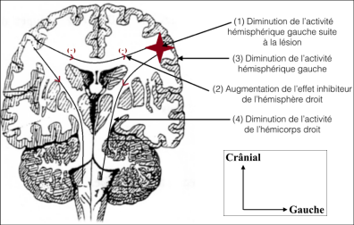
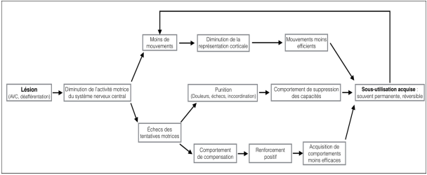

La thérapie par le mouvement induit par la contrainte
Une méthode innovante de rééducation du membre supérieur chez l'adulte hémiplégique
Introduction
La contrainte induite a vu le jour après des observations de
non-utilisations de membres parétiques malgré une commande motrice
fonctionnelle.
E. Taub l'a défini comme étant une « technique de
rééducation visant à modifier le comportement du patient vis-à-vis
de son membre déficitaire, avec pour objectif de réduire
substantiellement les incapacités en augmentant l'utilisation du
membre supérieur dans les activités de la vie quotidienne (AVQ) ».
La thérapie par contrainte induite consiste en une limitation plus
ou moins importante du membre supérieur non-parétique sur un temps
d'éveil important.
L'utilisation forcée du membre atteint permet de
développer sa motricité.
Principes
La thérapie par contrainte induite a pour objectif de lutter contre
la sous-utilisation acquise du membre parétique malgré une
récupération motrice de celui-ci.
Elle cherche à réintégrer le
membre lésé dans les gestes quotidiens.
Le concept-clé de cette
technique est la sous-utilisation acquise ou bien appelée amnésie
motrice fonctionnelle ou plus simplement exclusion du membre. Trois
théories justifient cette exclusion : l'une prône la déafférentation
tandis que la deuxième parle de dysafférentation.
Quant à la
dernière, elle montre une corrélation entre l'héminégligence
corporelle et la sous-utilisation acquise.
Aucune n'a, à ce jour, pu
être démontrée mais elles ont le mérite de soulever de probables
justifications.
Syndrome de déafférentation comme théorie explicative de exclusion
Elle fut décrite par E. Taub et ses collaborateurs en 2006. Elle repose sur 3 axes :
-
La diminution du mouvement, directement lié à la lésion cérébrale,
amène à une réduction de la représentation corticale.
Les mouvements se font alors plus difficilement et avec plus d’imprécisions.
L’explication viendrait de l’inhibition interhémisphérique (figure 1).
Dans le cas d’un AVC, le côté ipsilatéral à la lésion ne pourrait plus tenir en échec l’inhibition de l’hémisphère controlatéral.
L’expression motrice du membre parétique serait alors inhibée dès l’initialisation par l’hémisphère sain. -
Les échecs répétés dans les tâches de la vie quotidienne
(improductivité du mouvement, douleurs, non-coordination, etc.)
concourent à une utilisation préférentielle du membre
controlatéral.
E. Taub et ses collaborateurs ont observé des singes déafférentés qui essayaient d’utiliser leur membre hémiplégique sans réussite juste après l’opération. Après des pertes d’équilibre, des chutes et des lâchages de nourriture, les singes ont appris à ne plus utiliser leur bras hémiplégique. -
Le dernier axe repose sur une mise en place de comportements de
compensation plus efficaces et plus économiques en énergie et en
attention.
Cette mise en place participerait à l’augmentation de la représentation corticale du membre supérieur non-atteint au détriment du membre parétique de par la sur-utilisation de ce membre. Cela se rapporte à la plasticité cérébrale.

Figure 1 - Schéma sur une coupe frontale expliquant l'inhibition interhémisphérique

Figure 2 - Développement de la sous-utilisation acquise
La figure 2 montre la mise en place d’une boucle de désadaptation
psychomotrice où l’inutilisation du membre parétique entraine des
complications d’utilisation, il sera alors moins utilisé.
De plus,
les comportements de suppression et de compensation surajoutent des
complications à ce phénomène.
Syndrome de dysafférentation comme théorie explicative de l'exclusion
Cette hypothèse expliquerait la genèse de la sous-utilisation
acquise .
Selon Paillard, un « mouvement volontaire nécessite une
initialisation, une planification, une programmation puis une
exécution ».
En outre, les différentes sensibilités concourent à la
finesse du mouvement et à sa temporalité.
Ce syndrome de
dysafférentation aurait comme origine une altération de la boucle
sensori-motrice. L’initialisation, la planification et/ou la
programmation seraient perturbées.
Altération de la boucle sensori-motrice :
Elle proviendrait d'une incohérence du message sensitif dans le
lobe pariétal primaire.
L'aire associative (rôle de décryptage de
l'information), devant des messages inhabituels, en transmet un,
moteur, qu'elle croit adapté.
Il serait une sous-utilisation (voire une exclusion) du membre
parétique.
Les troubles de la sensibilité, associés à ce
dysfonctionnement pariétal, viendraient renforcer l'incohérence du
message sensitivo-moteur.
Relation entre exclusion et troubles du schéma corporel :
Le schéma corporel est selon Schilder « la représentation que chacun a de son propre corps,
qu’il soit immobile ou en mouvement dans l’espace ».
Le schéma moteur est, quant à lui, un
concept dynamique qui correspond à la représentation mentale du mouvement.
Un mouvement volontaire nécessite une conscience des segments de son corps et de schémas corporels (constitués pendant la petite enfance). Le concept de « contrôle cortical moteur »
associe ces représentations du corps (phénomènes intrinsèques) à l’environnement,
permettant ainsi de prédire une réponse motrice adaptée.
Ensuite, un système de contrôle
(le cervelet) compare cette réponse prédite à la commande motrice nécessaire à sa réalisation. Le « contrôle cortical moteur » produit alors une commande motrice efficiente, qui allie
les schémas pré-existants et l’adaptation nécessaire pour l’inclusion dans un environnement
spécifique.
Cette prédiction est appelée « copie efférente ».
Elle est une extrapolation des conséquences de la commande motrice sur le mouvement à venir. Lors de la réalisation du mouvement, cette copie est comparée au feedback sensoriel, permettant ainsi de modifier la
commande motrice (mécanisme d’asservissement).
Dans le cas des AVC, ces feedbacks sensoriels peuvent être perturbés voire abolis. Cela concoure à la modification du schéma corporel du patient hémiplégique. Ces troubles du schéma corporel induisent donc une réponse
motrice inadaptée aux stimuli extrinsèques, concourant à une exclusion du membre.
La douleur est définie par l’association internationale pour l’étude de la douleur (IASP) comme « une expérience sensorielle et émotionnelle désagréable, associée à un dommage tissulaire présent ou potentiel, ou décrite en termes d’un tel dommage ».
Elle a un rôle de signal d’alarme mais peut se pérenniser et devenir une douleur chronique alors que la cause initiale de cette douleur n’est plus.
En lien avec les schémas corporels, le concept de « contrôle cortical moteur » englobe la nociception.
En effet, la copie efférente anticipe le mouvement ainsi que les feedbacks senso-riels à venir.
Si le mouvement prédit est douloureux, il sera alors évité.
Cela pouvant donc amener à une sous-utilisation voire à une exclusion du membre.
Analogie entre l'héminégligence corporelle et l'exclusion
L’héminégligence corporelle est un trouble de l‘orientation de
l’attention vers un membre, un hémicorps, etc. d’origine centrale.
Si les deux autres théories avaient comme base la dysfonction, voire
l’absence, d’afférence sensori-motrice, celle-ci repose sur un
déficit attentionnel .
Nous retrouverons une difficulté au
désencrage automatique du côté lésionnel (lésion cérébrale) et une
impossibilité d’orientation attentionnelle vers le côté
non-lésionnel . Le phénomène d’héminégligence se retrouve le plus
souvent après un AVC dans les territoires de l’artère cérébrale
moyenne ou de l’artère cérébrale postérieure de l’hémisphère
nondominant.
L’héminégligence peut se manifester par sa composante
attentionnelle où le patient ne pourra réagir ou orienter son
attention vers des stimuli sensoriels dans son hémi-espace
controlatéral à la lésion cérébrale.
Elle présente également une
composante motrice qui peut amener à une sous-utilisation du membre
supérieur controlatéral à la lésion (négligence motrice). De ce
fait, la différenciation entre l’héminégligence et l’exclusion
réelle du membre devient difficile.
Néanmoins, l’héminégligence peut
être améliorée par une approche « top-down » en agissant sur la conscience du
déficit par des procédés de feedback.
L’approche « bottom-up »,
quant à elle, vise à modifier les représentations corticales de
l’espace et du corps du sujet par des techniques sensori-motrices
(comme la mobilisation). Par cette analogie entre l’héminégligence
corporelle et l’exclusion du membre, cette dernière serait
rééducable par ces deux approches.
De ce fait, nous pourrions
considérer le phénomène d’exclusion comme un comportement de
négligence dont l’origine lésionnelle est périphérique (renvoie à la
dysafférentation) et le mécanisme fonctionnel est central.
Nous
pourrions donc considérer que l’exclusion serait un trouble
attentionnel d’origine périphérique.
L'approche « top-down » (action de la conscience sur la motricité) et « bottom-up » (techniques sensori-motrices) permettent toutes deux de lutter contre l'exclusion.
Action de thérapie par contrainte induite
La thérapie par contrainte induite ou Constraint-Induced Movement
Therapy (CIMT), cherche à agir sur le phénomène d'exclusion.
Nous
allons faire des liens avec les trois théories explicatives de la
sous-utilisation acquise.
Incidence inhibitrice de la CIMT :
L’objectif de la contrainte est de bloquer ou de limiter les
mouvements du membre supérieur non-atteint.
Dans la théorie de
déafférentation de E. Taub, la contrainte cherche à rompre les
comportements de compensation qui s’opèrent du côté homolatéral à la
lésion cérébrale. Le patient n’a alors qu’un seul choix, utiliser
son membre parétique, permettant ainsi une inhibition de l’activité
de l’hémisphère controlatéral à la lésion.
Cette inhibition permet
de lever en partie l’emprise que l’hémisphère sain a sur son
homologue lésé .
Pour la théorie de dysafférentation, cette
contrainte permet de lever l’utilisation préférentielle du côté
ipsilatéral à la lésion dans les tâches de la vie quotidienne.
Cela
agirait sur les schémas moteurs et plus particulièrement sur la
planification du mouvement, afin de redonner une spontanéité
d’utilisation du membre parétique.
En ce qui concerne la théorie
attentionnelle, la sous sollicitation du membre sain par la
contrainte permet de lever les coûts attentionnels dont le patient a
besoin pour mouvoir et ressentir son membre supérieur non-atteint.
Libérant ainsi des capacités d’attention qui permettent une approche
« top-down ».
Incidence excitatrice de CIMT :
Cette composante repose sur l’intensité d’une rééducation et sur la
répétition de tâches orientées .
Dans la théorie de déafférentation,
cette composante va à l’encontre des comportements de suppression de
capacités et induit plus de mouvements.
Cela favorise une meilleure
représentation corticale du membre parétique et favorise
l’inhibition de l’hémisphère controlatéral à la lésion par
l’excitation de l’hémisphère lésé.
Le but est donc de stimuler
l’hémisphère lésé afin de retrouver un équilibre entre les deux.
Pour la théorie de dysafférentation, l’utilisation intensive du
membre parétique induit de nouveaux feedbacks sensoriels, amenant un
affinement des schémas moteurs, tant au niveau des afférences
sensitives que de la commande motrice.
En ce qui concerne le déficit
attentionnel, cette composante excitatrice de la CIMT amène le
patient à se focaliser sur son membre parétique, stimulant ainsi ses
capacités attentionnelles centrées sur ce membre atteint.
En résumé, la thérapie par contrainte induite oriente la
plasticité cérébrale vers un nouvel équilibre entre les deux
représentations corticales.
Elle a pour but de réintégrer le
membre supérieur dans les activités de la vie quotidienne du
patient avec un objectif purement fonctionnel.
C’est une thérapie
comportementale qui vise à changer l’attitude du patient envers
son membre parétique.
Différentes contraintes
Il est important de préciser que la contrainte doit pouvoir être
retirée par le patient, et ce à n'importe quel moment, pour des
soucis de sécurité.
Pour comparer les différentes incidences des
contraintes sur le membre supérieur sain, nous allons utiliser le
Motor Assessment Scale (MAS) car elle est reconnue par l'HAS dans le
cadre de la prise en charge d'un AVC et qu'elle reste facilement
reproductible (nécessité de petits matériels).
Dans cette échelle, trois catégories nous intéressent plus
particulièrement : la fonction du membre supérieur, les mouvements
et les activités fines de la main.
Chacune de ces catégories sont
cotées de 0 à 6.
Le choix de la contrainte dépend des objectifs thérapeutiques
émanant du masseur-kinésithérapeute.
Il a été cependant montré que
la restriction de la main était plus efficace que la contrainte
prenant le membre supérieur dans sa globalité.
Il existe autant de
contraintes que de patients mais cinq ressortent de la littérature,
que nous allons classer de la plus à la moins contraignante :
- Un mayo-clinic
- Un manchon avec le coude au corps
- Une écharpe
- Une moufle
- Un élastique autour des doigts II à V
Mayo-clinic
Ce type de contention est réalisé, sur le membre supérieur sain, par
un personnel soignant à partir d'un jersey, de mousse et d'accroche
type épingle à nourrice.
Nous la comparons avec les trois critères
de l'échelle MAS :
| Critère MAS | Cotation | Explication |
|---|---|---|
| Fonction du membre supérieur | 0 | Extension du coude impossible |
| Mouvements de la main | 3 | Extension et inclinaison radiale du poignet possibles |
| Activités fines | 1 | Exploration de l'espace limitée |
L'impotence fonctionnelle générée par cette contrainte est donc
quasi-totale, le membre sain est inutilisable pour les réactions
d'équilibration, l'exploration de l'espace est impossible.
Seule la
préhension subsiste, à condition de positionner l'objet à la
proximité immédiate de la main.
Manchon coude au corps
Orthèse vendue en pharmacie correspondant à deux sangles : l'une permettant de soutenir le membre supérieur contre la pesanteur et la seconde ayant pour but de maintenir le bras le long du corps.
| Critère MAS | Cotation |
|---|---|
| Fonction du membre supérieur | 0 |
| Mouvements de la main | 3 |
| Activités fines | 1 |
L'impotence fonctionnelle équivaut à celle du mayo-clinic.
Écharpe
Orthèse également vendue en pharmacie, elle peut aussi être confectionnée par le thérapeute (souvent utilisée dans les hôpitaux publics pour éviter le diastasis de l'épaule hémiplégique).
| Critère MAS | Cotation |
|---|---|
| Fonction du membre supérieur | 0 |
| Mouvements de la main | 3 |
| Activités fines | 6 |
L'impotence fonctionnelle qu'impose l'écharpe est moins importante
que les deux précédentes.
En effet, une exploration de l'espace est
possible même si elle reste limitée (au niveau de l'extension de
coude).
Moufle
Outil, semblable à celui que nous utilisons dans la vie quotidienne, qui permet de ne conserver que l'opposition du premier doigt avec les quatre autres et des prises globales.
| Critère MAS | Cotation |
|---|---|
| Fonction du membre supérieur | 6 |
| Mouvements de la main | 5 |
| Activités fines | 1 |
L'impotence fonctionnelle est essentiellement liée à l'utilisation
de la main saine.
Les prises fines sont impossibles ainsi que la
dissociation de la main interne et de la main externe.
Élastique autour des doigts II à V
L'élastique permet de limiter la différenciation des doigts contraints, il préserve la sensibilité superficielle, l'opposition et les prises fines.
| Critère MAS | Cotation |
|---|---|
| Fonction du membre supérieur | 6 |
| Mouvements de la main | 6 |
| Activités fines | 3 |
L'impotence fonctionnelle est vraiment minime.
La dissociation de la
main externe par rapport à la main interne est impossible.
Le but de
cette contrainte est essentiellement proprioceptif.
Incidence fonctionnelle des contraintes
| Contraintes | Cotation MAS | Incidence fonctionnelle | ||
|---|---|---|---|---|
| Fonction du membre supérieur | Mouvements de la main | Activités fines | ||
| Mayo-clinic | 0 | 3 | 1 | Seule la préhension persiste |
| Manchon coude au corps | 0 | 3 | 1 | Similaire au mayo-clinic |
| Écharpe | 0 | 3 | 6 |
Préhension possible ainsi que la prono-supination. Possibilité de travailler les réactions parachutes du membre supérieur. |
| Moufle | 6 | 5 | 1 |
Exploration du membre supérieur dans l'espace. Activités bi-manuelles et réactions parachutes possibles. |
| Élastique | 6 | 6 | 3 | Rôle essentiellement proprioceptif |
Exercices et Tâches type: contrainte induite
| EXERCICE | DESCRIPTION | TÂCHES DE MODELAGE |
|---|---|---|
| Mini Solitaire | Tâche de dextérité axée sur la prise en pince - ramasser et déplacer de petites chevilles entre les trous d'un plateau. | Augmenter la vitesse en chronométrant, changer la hauteur du plateau (par exemple placer sur un bloc), changer la distance du patient. |
| Ramasser des bâtons | Tâche de dextérité axée sur la précision de la prise en pince, essayer de ramasser les bâtons sans faire bouger les autres. | Vitesse, changer la distance déplacée, changer la taille des bâtons (par exemple allumettes). |
| Jetons et pot | Ramasser des jetons d'un pot et les placer sur la table et vice versa. | Changer la hauteur du pot, vitesse, changer le type de jeton (utiliser des pièces), changer la distance du pot par rapport au patient. |
| Jetons | Manipulation en main - ramasser des jetons un à un, augmenter progressivement le nombre tenu en main - relâcher un à un. | Utiliser des pièces ou des jetons plus petits, relâcher dans une cible de taille variable, ramasser à partir de différentes surfaces/conteneurs, distance du patient. |
| Écrou et boulon | Presser des ailes sur des écrous, le patient visse l'écrou puis le dévisse. | Vitesse, utiliser un écrou standard plutôt qu'un écrou à ailettes, distance de la presse par rapport au patient. |
| Cartes | Retourner des cartes à jouer individuelles. | Vitesse, distance du paquet par rapport au patient, taille des cartes, poser individuellement ou en pile. |
| Billes | Manipulation en main - comme la tâche des jetons. | Utiliser des billes de différentes tailles, utiliser des objets de formes différentes comme des stylos ou des trombones. |
| Clés | Manipulation en main d'une clé pour déverrouiller des placards/tiroirs à différentes hauteurs (mobilisation et force). | Commencer par des placards bas et augmenter la hauteur, varier le nombre de clés sur le porte-clés, vitesse, distance du patient par rapport au placard. |
| Écriture | Prise d'écriture. | Suivre un modèle avec l'index si l'écriture est trop difficile, stylos adaptés, commencer par des motifs/lettres larges et réduire la taille, labyrinthes. |
| Placard et réfrigérateur | Ouvrir et fermer des placards/réfrigérateur et charger/décharger des objets. | Commencer par des étagères/placards bas et augmenter, objets de différentes tailles, poids et formes, varier la distance du patient par rapport au placard. |
Annexe 1 - Exemples d'exercices
Différents protocoles
Beaucoup de protocoles voient le jour chaque année, cependant peu sont reconnus et validés. Nous allons présenter les trois protocoles les plus rencontrés dans la littérature et qui
rentrent dans la méta-analyse de la Cochrane .
Il est également intéressant de voir que
certains auteurs utilisent des appartements thérapeutiques afin d'améliorer la compliance
des patients et de pouvoir amener une transposition fonctionnelle plus rapide entre les
exercices de rééducation et les activités de la vie quotidienne.
Des contrats thérapeutiques
peuvent également être mis en place pour s'assurer du consentement et de la motivation du
patient.
Ces choix peuvent se greffer avec n'importe quel protocole.
Les trois protocoles ont une partie commune : la contrainte.
Cette dernière est classiquement
décrite comme une utilisation forcée du membre parétique avec une restriction de
mobilité du bras et/ou de la main controlatéraux.
Elle a été initialement décrite comme devant être présente pendant 90% du temps d'éveil
(le membre étant contraint pour la rééducation mais également pour les actes de la vie quotidienne). Le patient est libéré pour la toilette et l'habillage. Cependant, de nombreuses variations de temps de contrainte existent :
90% du temps d'éveil, six heures par jour ou encore cinq heures quotidiennes.
Le temps de
rééducation journalier (consacré entièrement à la rééducation du membre supérieur), la
durée du protocole, les types d'exercices de rééducation et les contraintes sont également
des variables.
Des temps importants de rééducation quotidienne n'ont pu montré de meilleurs
effets que des temps plus courts .
Cependant, étant donné l'hétérogénéité des
groupes, la probabilité que cette affirmation soit le fruit du hasard est élevée (p=0,07).
Thérapie par contrainte induite
En supplément de cette utilisation forcée, une rééducation intensive du membre supérieur
parétique est planifiée.
Ce protocole fut en premier décrit par E. Taub et collaborateurs qui
avaient établi une durée de rééducation fixée à six heures par jours, pendant cinq jours par
semaine, pendant deux semaines.
Le patient avait donc soixante heures de rééducation intensive de son membre supérieur parétique et la contrainte était portée pendant 90% du
temps d'éveil.
La Cochrane le décrit simplement comme une rééducation de plus de trois
heures par jour.
Thérapie par contrainte induite modifiée
Ce protocole de contrainte induite modifiée est souvent appelé, en France, la contrainte
induite allégée.
En effet, la première fois qu'il fût décrit, ce protocole, semblable au premier,
ne donnait lieu qu'à cinq heures de rééducation par jour (contre six heures). Il a évolué vers
ce que la Cochrane en fait aujourd'hui : le temps de rééducation pour ce protocole est de
moins trois heures par jours.
Utilisation forcée
Ce protocole reste peu présent dans la littérature car aucune rééducation avec un professionnel de santé n'est associée au temps de contrainte. Ce temps, avec l'utilisation forcée du
membre parétique qui en découle, est en soi une auto-rééducation.
Il peut servir dans des
protocoles de recherches où l'on vise à démontrer l'efficacité de certains exercices de rééducation dans le cadre d'un protocole de thérapie par contrainte induite (modifiée ou non).
Il peut également permettre de comparer les effets de la contrainte, avec des durées variables ou avec un groupe témoin.
Cependant, il a été démontré que la contrainte seule ne
suffit pas à obtenir des résultats.
En effet, elle doit être complétée par des tâches répétées
.
Limites de technique
Au fil de ce travail écrit, nous avons pu mettre en exergue quelques lacunes de cette technique. En effet, cette dernière est jeune et présente encore quelques imperfections.
Critères d'inclusions et d'exclusions
L'étude réalisée par S. Fabbrini et collaborateurs décrit la faible proportion de personnes pouvant suivre cette technique.
En effet, seulement 6,5% des patients hémiplégiques
ont pu intégrer cette étude.
L'étude EXCITE , quant à elle, garde 222 patients sur les
3626 initialement proposés (soit 6%).
Une autre , réalisée à Genève, n'a conservé que
quatre patients sur 240 (soit 1,7%).
En effet, avant de pouvoir bénéficier d'un traitement par
contrainte induite, un patient doit répondre à plusieurs critères précis dont la Cochrane a
recensé les principaux :
- « Le contrôle moteur volontaire du membre supérieur : possibilité d'extension des métacarpophalangiennes et des interphalangiennes de 10° (les doigts restant joints) et extension du poignet de 20° »
- « Absence de troubles cognitifs : il faut un score supérieur à 24 pour le Mini Mental State Examination (MMSE) ; pas de négligence ni de troubles de la compréhension ; un score inférieur à 1 sur les items de conscience, de communication et de négligence de la NIHSS »
- « Une sous-utilisation du membre supérieur dans les activités de la vie quotidienne, objectivé par un score inférieur à 2,5 sur l'échelle Motor Activity Log (MAL) »
- « Aucun trouble de l'équilibre ni de la marche »
- « Aucune douleur excessive au niveau du membre parétique : score inférieur à 4 sur l'échelle visuelle analogique »
- « Aucune spasticité excessive : score inférieur ou égal à 2 sur l'échelle d'Ashworth modifiée »
- « Aucune limitation d'amplitude du membre parétique »
Temps de rééducation
Le premier protocole proposé ayant un temps de rééducation de six heures par jours, peu de
praticiens se lancent dans cette technique dont les délais quotidiens seraient difficilement
soutenables.
Seules certaines infrastructures le peuvent avec la mise en place d'une réelle
prise en charge interdisciplinaire (aides-soignants, ergothérapeutes, masseur-
kinésithérapeutes, professeurs d'activités physiques adaptées, psychomotriciens, etc.).
Il paraît évident que ce temps consacré à un patient ne peut être un temps collectif. Les rééducateurs doivent alors passer plusieurs heures avec un seul patient chaque jour. Moins de patients sont pris en charge et donc un retentissement financier non-négligeable. De plus, le respect de la fatigabilité est un principe clef de la rééducation d'un patient hémiplégique, un temps important majorant l'impact sur la fatigue, les capacités du patient et la charge émotionnelle.
Post-effet
Les bénéfices à long terme, c'est-à-dire six mois après l'arrêt du traitement, ne se retrouve pas dans la méta-analyse de la Cochrane malgré des effets « modérément positif » à la fin du traitement.
Charge émotionnelle
Elle est régulièrement citée dans la littérature .
Le patient se retrouve confronté à ses
difficultés et ses incapacités plusieurs heures par jours.
La diminution factice d'autonomie
(bien que levée dès le retrait de la contrainte) régresse pendant le laps de temps
d'application de la contrainte, ce qui peut engendrer une forte charge émotionnelle chez le
patient ou ses proches.
Il est donc compréhensible que des désordres émotionnels et psychologiques puissent survenir pendant la rééducation. La Cochrane ne le cite pas dans les
principaux critères d'inclusion mais les patients fragiles émotionnellement sont régulièrement exclus des études.
Le choix du type de contrainte est donc important pour ce point.
En effet, un élastique autour des doigts II à V aura un impact moins fort par rapport à un manchon coude au corps.